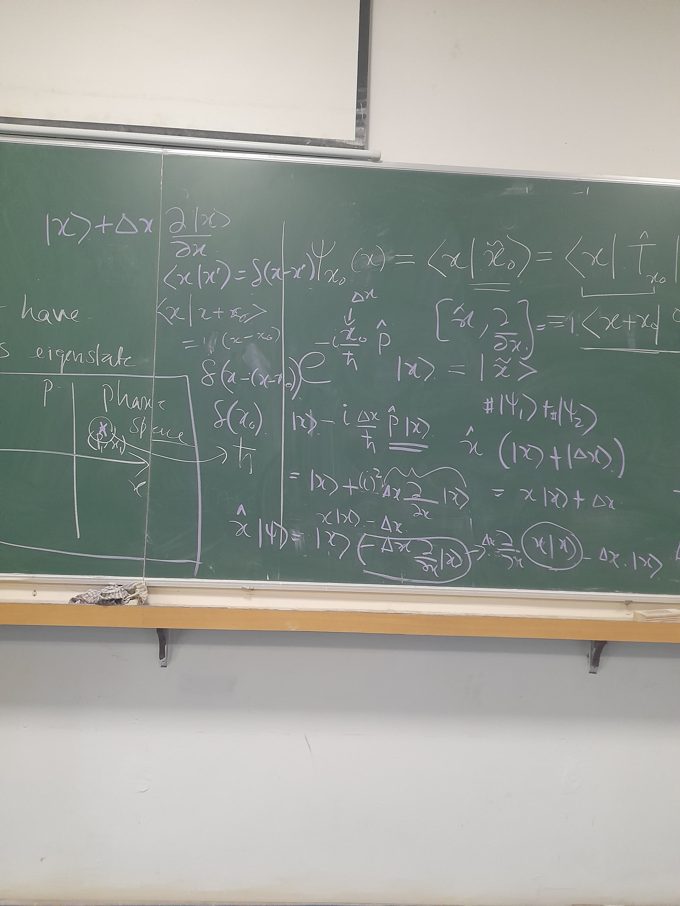
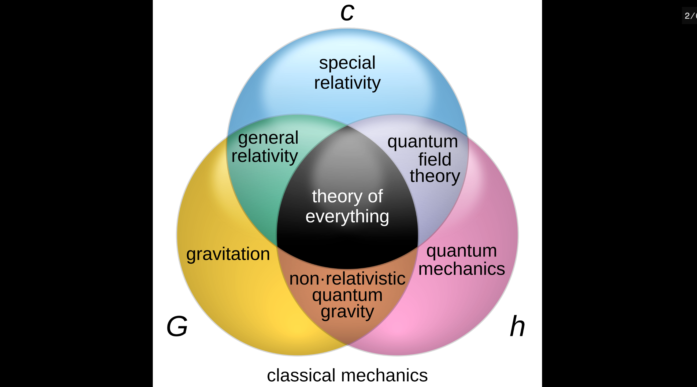

Lecture Notes & Reports
This is a collection of my study notes, derivations, and project reports on various topics in theoretical and experimental physics. They are heavily inspired by the clarity and rigor of standard lecture notes in the field. Please feel free to use them, and let me know if you find any typos!
Quantum Foundations
Explorations into the structural rules of quantum mechanics, wave-particle duality, and the fundamental limits on quantum evolution.

Delayed Choice Quantum Eraser
This theoretical study reproduces the landmark 1999 experiment by Kim et al. It delves into the heart of foundational quantum mechanics, specifically exploring wave-particle duality, the loss and recovery of interference patterns, and the profound implications of entanglement and which-path information on causality.
Early Universe & Inflationary Cosmology
An in-depth theoretical study of the physics of the early universe. These notes cover standard Big Bang cosmology, the physical motivation behind inflation, and the generation of cosmic magnetic fields from ultralight dark matter.

Inflationary Cosmology
Drawing heavily from Daniel Baumann's Cosmology and Leonard Susskind's lectures, these notes provide a rigorous theoretical overview of cosmic inflation. They detail the resolutions to the horizon and flatness problems, the mathematics of a shrinking comoving Hubble radius, and the dynamics of scalar-field-driven slow-roll inflation, connecting these concepts to the observed homogeneity of the Cosmic Microwave Background (CMB).
Cosmological Magnetogenesis
These derivations explore the theoretical mechanisms behind the generation of primordial cosmic magnetic fields. Specifically, the notes investigate how couplings with ultralight dark matter, covering both scalar and axion-like particle (ALP) models, during the early universe could seed the vast magnetic structures observed today.
Mathematical Methods in Physics
Independent studies on the rigorous mathematical frameworks required for advanced theoretical physics.
Lie Groups & Algebras
A self-contained, comprehensive study tailored specifically from a physicist's perspective. These notes focus heavily on continuous symmetries, continuous transformations, generators, and representations, building the rigorous mathematical framework necessary for understanding gauge theories, fundamental quantum mechanics, and relativistic physics.
Experimental & Applied Physics
Reports and presentations covering instrumentation, optics, and atmospheric phenomena.
Physical Property Measurement System (PPMS)
This report outlines the architecture and diverse measurement techniques of the PPMS, including heat capacity, transport, and AC/DC magnetometry. It specifically details the experimental characterization and temperature-dependent resistivity in thin, disordered Tungsten films.
Spin-Orbit Interaction of Light
An exploration of advanced wave optics, focusing on the intrinsic and extrinsic angular momentum of light (Spin and Orbital Angular Momentum). The notes cover geometric phases, photonic spin Hall effects, and the broader implications of spin-orbit coupling in nanophotonics.
Geomagnetic Storms
A concise overview of solar-terrestrial physics, detailing the mechanisms of geomagnetic storms, the interaction between the solar wind and Earth's magnetosphere, and the resulting atmospheric and electromagnetic phenomena.
No notes match your search. Try a different keyword, or show everything.